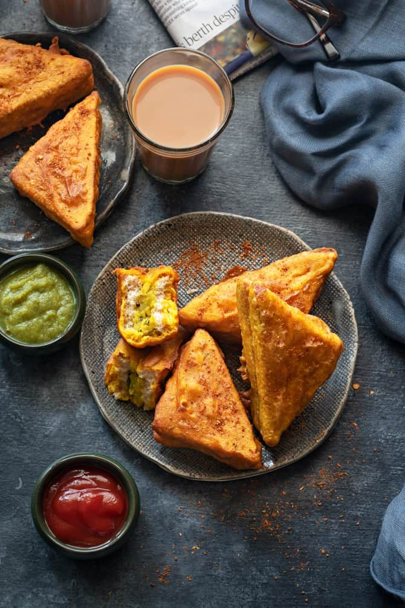

Traditional
Vegetarian Items

Vegetarian recipies is based on food that meets vegetarian standards by not including meat and animal tissue products
South Indian foods like sambar, rasam, koottu, karembadu, upma, palya or taalimpu, kozhambu or koora, aviyal, olan, Kadala curry,
Theeyal, pulihora pr puliyogare, Chammandi, Chutney, Chitranna, Bisi Bele Bath, and breads like Appam, Puttu, pathiri, dosa, idli and vada.
vegetarian food includes dairy products but not eggs.
Taste it
Tasty and Healthy
Non Vegetarian Items

Non-vegetarian food contains meat and eggs.The diet, non-vegetarianism is the majority human diet in the world.
These type of food items includes meat of all the living organisams. Among them mostly we use chicken , mutton , fish , beef and pork.
Taste it
Refreshing
Snacks Items

A snack is a small portion of food generally eaten between meals. Snacks come in a variety of forms including packaged snack foods and other processed foods, as well as items made from fresh ingredients at home.
Snack foods are typically designed to be portable, quick, and satisfying. Snack items includes raw fruits and vegetables.
Taste it